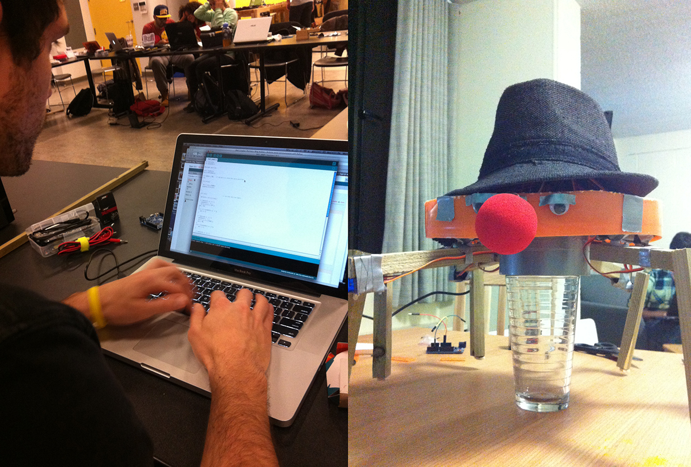
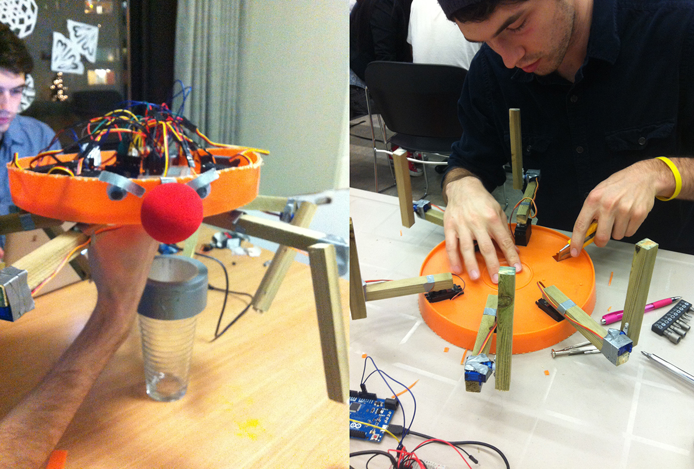

Inspired by dancing hexapod robots, Bucket Bot was created with the utmost love from the bottom of a bucket and a few cheap pieces of wood. He was built and programmed through arduino and was featured in the Digital Media showcase at York University and The Norman Felix Art Gallery in April 2013.
 